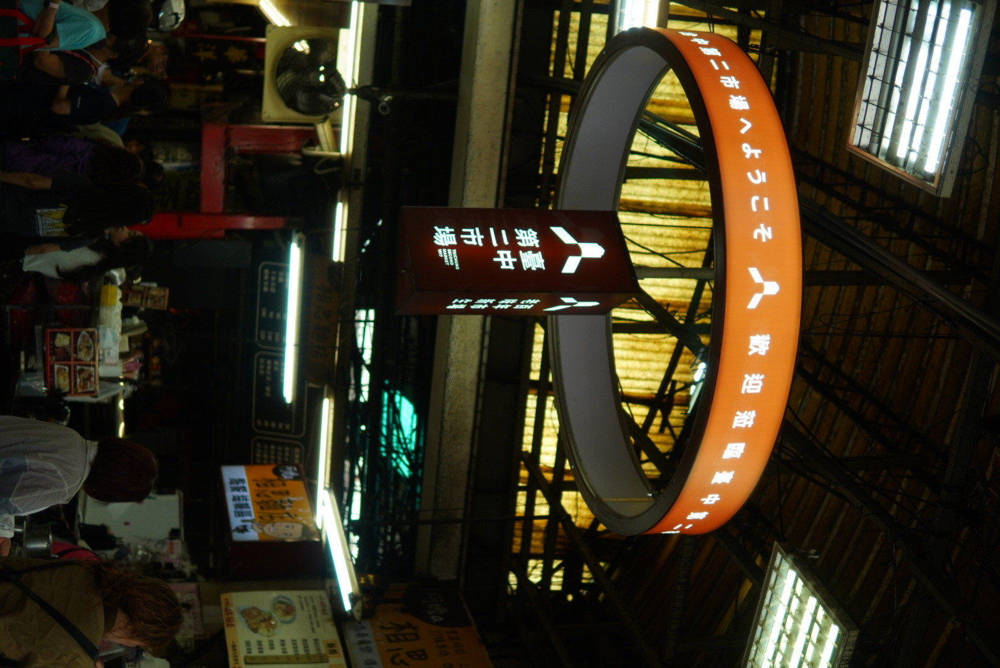

影展放映單元：七幕生態紀實全集
本影展將完整劇本分為七部曲短片。從 1917 年「新富町市場」的百年時空出發，透過老字號小吃背後的文化底蘊，打破年輕族群的刻板印象。

Episode 01
發現神祕物種：台中年輕人
【鏡頭鎖定】目標滑著手機、3秒內能找出網美咖啡廳，卻對市中心第二市場一無所知！「那不是阿公阿嬤買菜的地方嗎？」
Episode 02
棲地調查：從新富町到六角樓
【驚人發現】創建於 1917 年的「新富町市場」，核心竟然聳立著全台罕見的放射狀「六角樓」！認知即刻刷新。
Episode 03
天敵出現！三大競爭者夾擊
【警笛響起】一中商圈、第四市場文創基地與好市多強勢搶奪年輕目光。第二市場如何靠高密度老店群逆風突圍？
Episode 04
領地定位：味覺與歷史的十字軸線
【精準定位】山河大塊魯肉飯、嵐肉燥飯與老賴豆香紅茶，讓你一邊填飽肚子一邊累積歷史文化素養。
Episode 05
生存危機：SWOT 與夏季麻薏湯
【痛點剖析】收攤早、環境較熱？善用短影音傳播「微苦回甘的台中限定麻薏湯」，將劣勢化為獨特文化體驗。
Episode 06
物種分類：喚醒「在地陌生族」
【目標客群】鎖定 18～24 歲台中在地青年！從排隊名店「王記菜頭粿糯米腸」開始入門，滿足社交與探索渴望。
Final Episode 07・大結局
任務成功：吉鋒愛玉冰的完美收尾！
「走入第二市場，感受台中日常！」品嚐完魯肉飯與相思麵，再帶上一杯清爽檸檬愛玉，神祕個體心服口服！